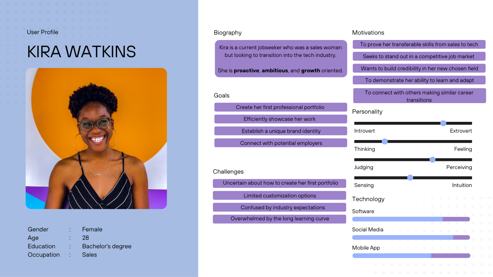
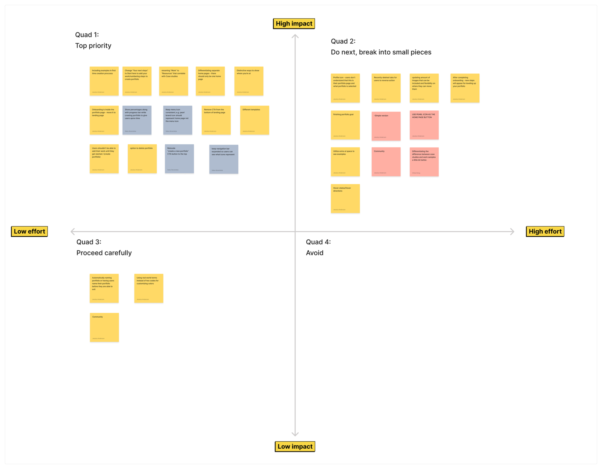
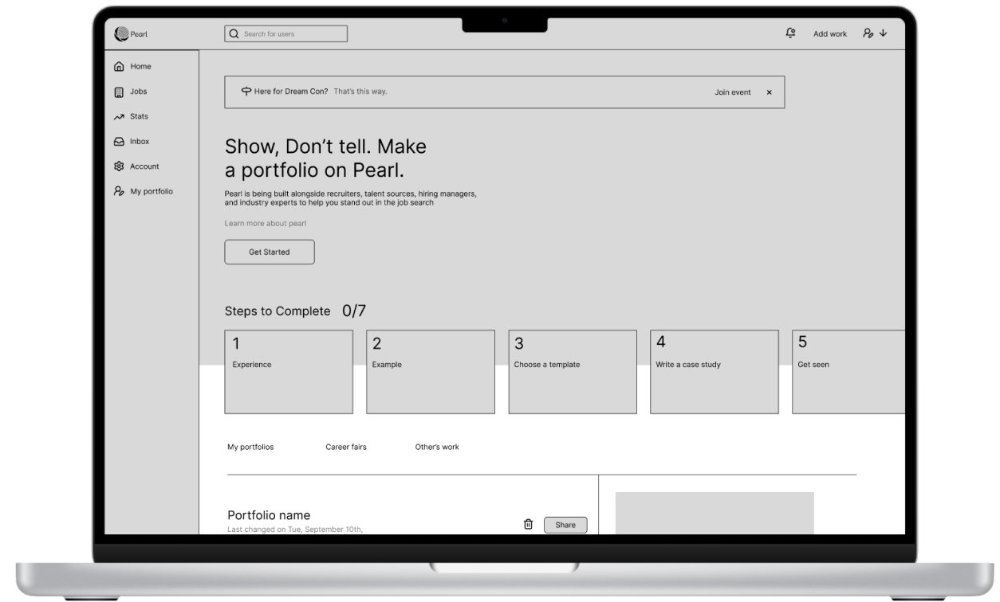
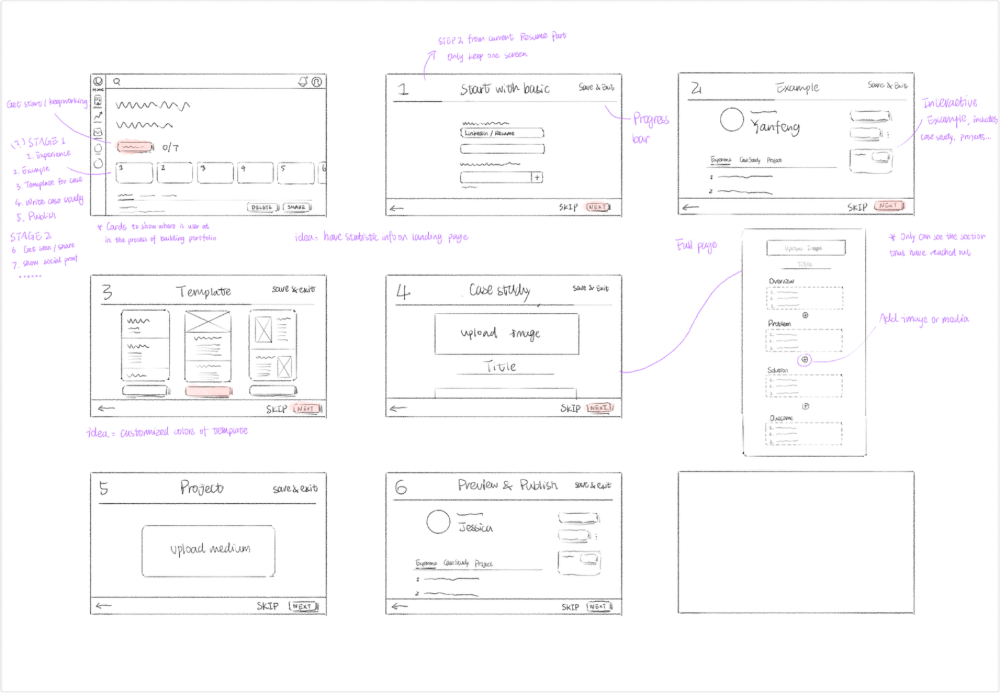
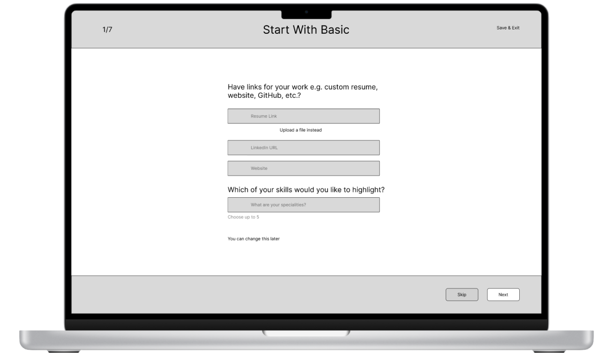
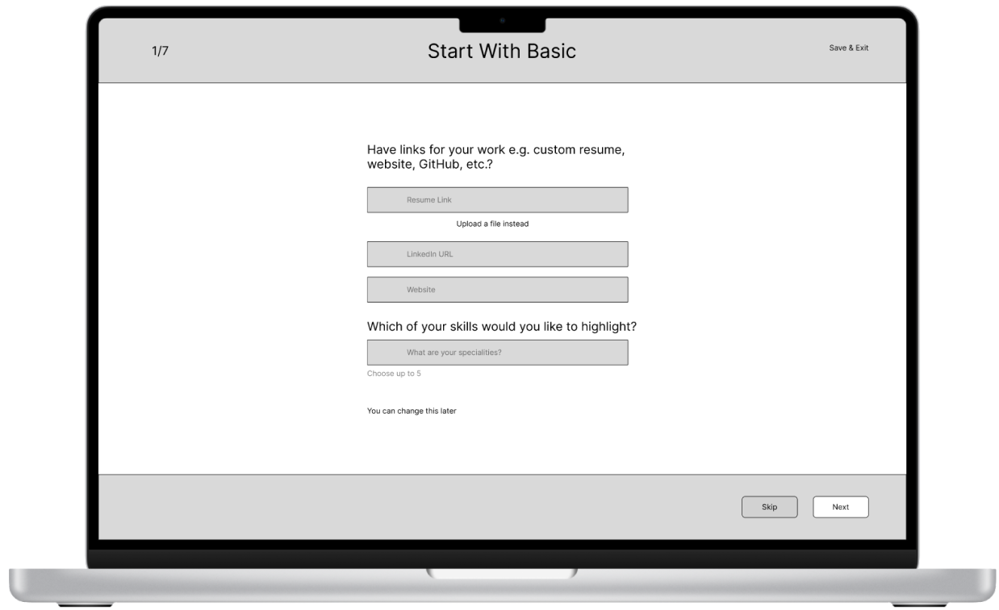
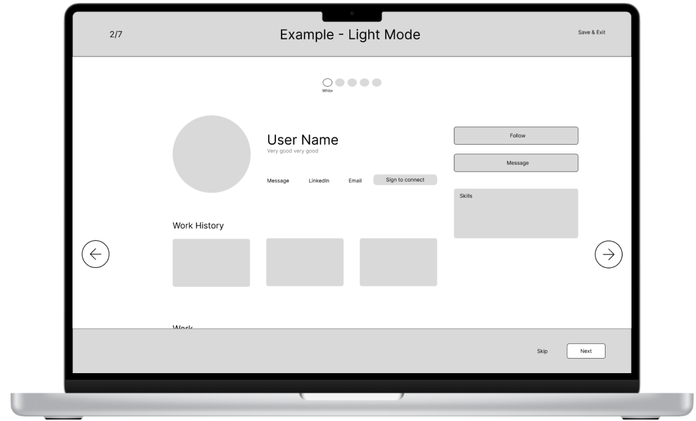
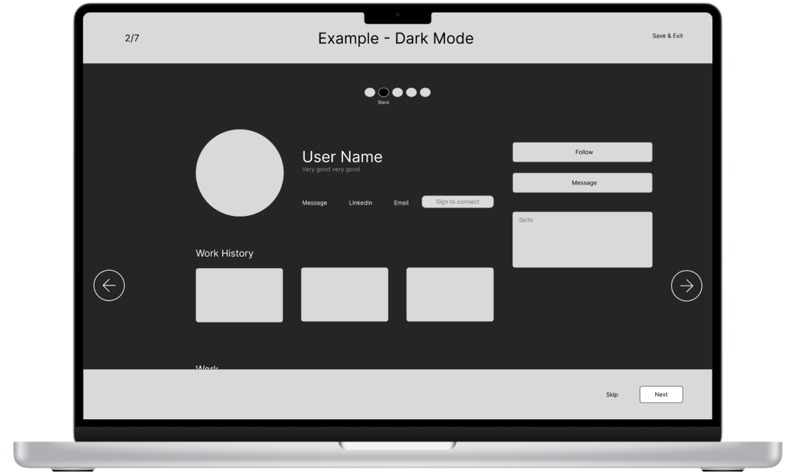
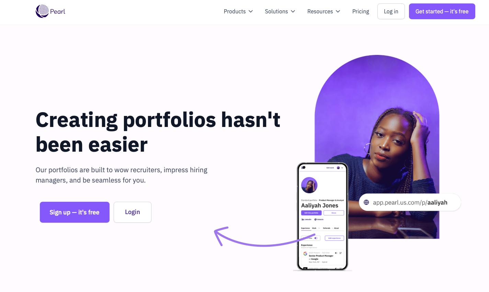
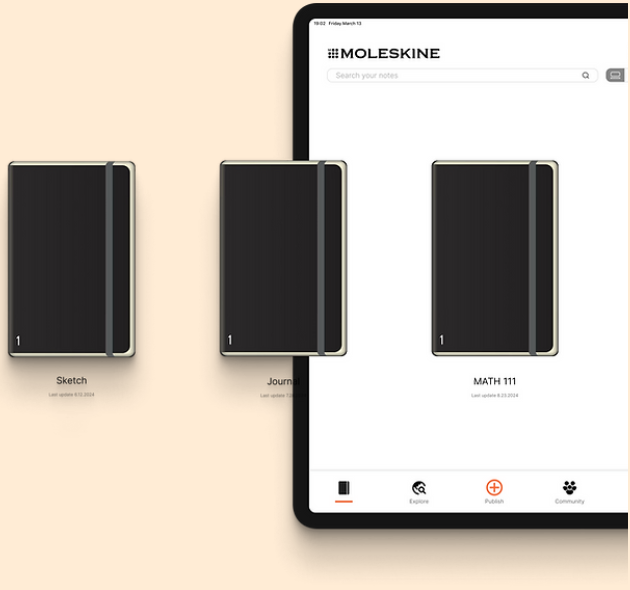

SAAS Platform for Job Seekers
A portfolio building platform catering to applicants with non-traditional backgrounds.
Developing a dashboard to help job seekers look competent, feel confident, and give them a competitive edge.
Pearl is a job search platform for event organizers, job seekers and employers, built for applicants with non-traditional backgrounds. The Pearl team asked us to improve the visual dashboard for job seekers.
My Role
Project Manager
UX Research Lead
Scope of work · Competitive & comparative analysis · Surveys & interview plan · Synthesis · Daily scrum · Point of contact
Design Team
Jessica Anderson, PM & Research Lead
Yanfeng Dong, UI & UX Research
Saba Abramidze, UI Lead
Timeline
3 weeks
Tools
Traffic tripled in a month, but most new users left before finishing a portfolio.
In 2024 Pearl partnered with DreamCon, and its user base tripled in one month. The surge brought analytics and feedback that showed where the experience broke down.
A redesigned onboarding and portfolio flow, now live on Pearl.
{{ s.title }}
{{ s.body }}

My Design Process
Screener Surveys
We first targeted DreamCon job seekers to match Pearl's partnership. When responses fell short, I pivoted recruitment to keep our three-week sprint on track.
I designed a screener that kept our core objectives but broadened the pool to people in the hiring process, especially non-traditional job seekers outside tech, and gathered 58 qualified participants.
Focus: portfolio experiences · barriers to building one · job-application pain points · desired platform features
{{ stat.label }}
58 participants seeking a variety of roles across industries.
Opportunities for Improvement
Survey results pointed to a need for a guided experience that demystifies portfolio building. A heuristic analysis pinpointed where the platform could simplify.
{{ h.title }}
{{ h.body }}
Interviews
With the team I wrote a 32-question script on values, motivations and routines, then recruited and remotely interviewed 7 users in 4 days. We referred back to these findings through the whole project.
{{ i.title }}
{{ i.body }}
Persona
We built a persona from our interviews (goals, frustrations and motivations) and kept it updated as new data came in, so we always designed for a real person.

Prioritizing the must-haves

Research gave us more ideas than three weeks allowed. A prioritization chart kept us focused on the essentials. Our design vision:
Lo-fi wireframes
The new home screen mirrors Pearl's original, with one key change: cards now represent the steps to a first portfolio, a mission-based journey, like a video game. A "Get started" call to action invites users to begin.


Getting started with basic information
A single “Get Started” button opens onboarding, where users add work experience, skills, resume and LinkedIn, information they already know, so they start grounded and confident.


Portfolio examples
After entering their information, users explore example portfolios for inspiration and a clear vision of what they’re working toward. A modal overlay keeps them anchored in the flow while offering inspiring examples at a glance.


Style customization for personal branding
Light or dark mode plus an accent color, a low-effort way to personalize, with live previews that show the portfolio taking shape and build confidence.
Guided case study creation
Each section of the first case study is a clear step with prompts: upload a header image, name the case study, add supporting information, and embed files from Figma, Excel and more. Modular, so it never feels overwhelming.
Usability testing
Three rounds of tests around three tasks: start a portfolio, customize its look and feel, and start a case study.
{{ is.body }}
Key Findings
{{ fd.title }}
{{ fd.body }}
The redesigned onboarding and portfolio creation experience is live on Pearl's platform.

{{ o.body }}
I had the pleasure of working with Jessica on a UX project for Pearl, my company, and I was thoroughly impressed by her performance. Despite the tight timeline of our design sprint, Jessica demonstrated exceptional skills in user research and analysis.
Her ability to uncover insightful research findings in such a short period was outstanding. Jessica's enthusiasm and genuine interest in understanding our users was evident throughout the project. She approached challenges with a positive attitude, never getting discouraged when faced with obstacles.
She efficiently managed the research process and showed great resourcefulness in identifying and recruiting suitable interview participants. This skill was crucial in ensuring we gathered valuable user insights within our limited timeframe.
Next Steps
{{ ns.title }}
{{ ns.body }}
Thank you for reading my case study!

Moleskine →
A social network app brought to you by a company known for their analog notebooks